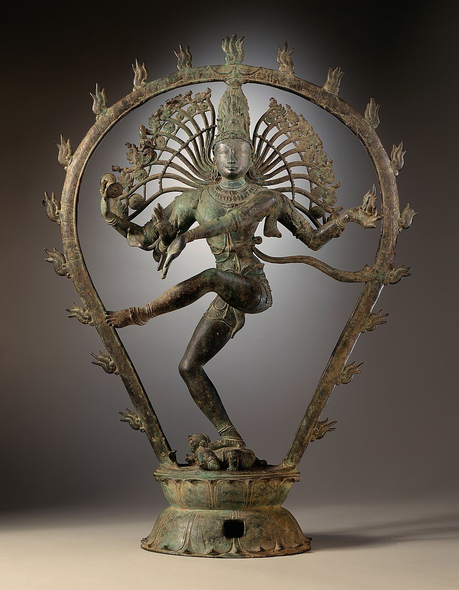

Chapter 19: Indian Thought and Modern Science: History, Analogy and Overreach¶
anulomagatir nausthaḥ paśyaty acalaṃ vilomagaṃ yadvat
acalāni bhāni tadvat samapaścimagāni laṅkāyām
As a man in a boat moving forward sees the stationary objects on the shore moving backward, so are the stationary stars seen by people at Laṅkā as moving exactly westward.
— Āryabhaṭa, Āryabhaṭīya, Golapāda 9 (499 CE)
19.1 Two Kinds of Story¶
Two quite different stories are told about Indian knowledge and modern science, and they are often confused. The first is a story of history: of results, methods and instruments that were developed in India, transmitted to other cultures and eventually became part of the science of the whole world. The decimal place-value numerals with zero are the most important example; trigonometry, astronomical tables, medical knowledge and the analysis of language are others. This story is true, well documented, and told in detail in Volumes 10–14 of this series.
The second is a story of anticipation: that the Vedas, Upaniṣads, Purāṇas or Jain and Buddhist texts already contained the discoveries of modern physics, cosmology, genetics or computing, or that modern scientists found in them the inspiration for their theories. This story, in most of its forms, is false. It has been repeated in popular books and in speeches by public figures, and it has done real damage, because it discredits the genuine achievements of Indian science and diverts attention from the actual history. This chapter examines both stories, and then asks what kinds of comparison between Indian thought and modern science are legitimate.
19.2 Real Transmissions¶
19.2.1 Numerals and zero¶
The decimal place-value system with a symbol for zero developed in India in the first millennium CE. Positional notation with zero is clearly attested in Indian texts from the fifth and sixth centuries, and in inscriptions somewhat later; a well-known inscription of 876 CE in the Caturbhuj temple at Gwalior uses a small circle for zero. Brahmagupta’s Brāhmasphuṭasiddhānta (628 CE) gave the first systematic rules for calculating with zero and with negative quantities (“debts” and “fortunes”), including the rule that a number added to zero is unchanged and that a number multiplied by zero is zero; he also stated that zero divided by zero is zero, which modern mathematics does not accept (Plofker 2009). In 662 the Syrian bishop Severus Sebokht praised the Indian method of calculation with nine signs. The Baghdad scholar al-Khwārizmī wrote around 825 a treatise on arithmetic with Indian numerals, which survives in a Latin version beginning Dixit Algorizmi; from his name comes the word “algorithm”. Leonardo of Pisa (Fibonacci), who learned the “Indian figures” in North Africa, introduced them to Latin Europe in his Liber Abaci (1202), and they slowly replaced Roman numerals over the following centuries (Joseph 2011). Volume 11 traces this history in detail.
The adoption of the new numerals in Europe was neither quick nor uncontested. Merchants valued them for calculation, but they were easier to falsify than Roman numerals, and in 1299 the bankers’ guild of Florence forbade its members to use them in account books. Counting boards and Roman numerals remained common in Europe until the sixteenth century. The spread of a superior technique depended on institutions and habits, not only on its merits.
19.2.2 Astronomy and trigonometry¶
Indian astronomical works were translated into Arabic at Baghdad in the late eighth century; a version of Brahmagupta’s work became known as the Sindhind. Indian astronomers had replaced the Greek table of chords with a table of half-chords, or sines, and the Sanskrit word for the sine, jyā or jīvā (“bowstring”), was transliterated into Arabic as jība, read as jayb (“fold” or “pocket”), and translated into Latin as sinus — the origin of the English “sine”. Āryabhaṭa (499 CE) taught that the apparent daily westward motion of the stars is caused by the Earth’s rotation, as the verse quoted at the head of this chapter shows; most later Indian astronomers did not follow him on this point (Volume 12).
19.2.3 Two-way traffic¶
Transmission did not run only from India outwards. Indian astronomy itself had absorbed Babylonian and Greek elements: the zodiac of twelve signs, the planetary week and much of the technical apparatus of horoscopic astrology entered India from the Hellenistic world in the early centuries CE, as the Greek loanwords in Sanskrit astrological texts show (horā from Greek hōra, kendra from kentron, jāmitra from diametron) (Pingree 1981). A verse in Varāhamihira’s Bṛhatsaṃhitā (sixth century), attributed there to the older authority Garga, declares that the Greeks (yavana), though foreigners, are to be honoured like sages because this science is well established among them. In the second millennium, Islamic astronomy reached India in its turn: Persian and Arabic astronomical tables (zīj) were used at the courts of the sultans and Mughals, the astrolabe was adopted and described in Sanskrit, notably in Mahendra Sūri’s Yantrarāja (1370), and Sanskrit scholars at Jai Singh’s court in the eighteenth century translated works of Islamic and European astronomy (Chapter 16). The history of Indian astronomy is thus a history of exchange, and Indian astronomers were most creative when they engaged with other traditions rather than when they ignored them.
19.2.4 The Kerala school¶
Between the fourteenth and sixteenth centuries, a lineage of astronomers in Kerala beginning with Mādhava of Saṅgamagrāma (c. 1340–1425) found infinite series for the sine, cosine and arctangent and for \(\pi\), together with corrections that accelerate their convergence. Their results were set out with demonstrations in Nīlakaṇṭha’s Tantrasaṅgraha (1500) and above all in Jyeṣṭhadeva’s Yuktibhāṣā (c. 1530), written in Malayalam. These results were achieved two to three centuries before Gregory, Newton and Leibniz found the same series in Europe, and they rest on careful arguments about sums of increasingly fine divisions that historians compare with the methods of early calculus. They were first brought to European attention by Charles Whish in a paper of 1835. Whether they reached Europe earlier, through Jesuit missionaries active on the Kerala coast in the sixteenth century, has been argued but not demonstrated; there is no documentary evidence of transmission (Plofker 2009; Joseph 2011). The achievement does not depend on transmission: it is one of the great independent discoveries in the history of mathematics.
19.2.5 Medicine¶
Sanskrit medical works, including those of Caraka and Suśruta, were translated into Arabic in Baghdad in the eighth and ninth centuries, and Indian physicians worked at the Abbasid court. In the colonial period, European surgeons learned from Indian practice: a letter in the Gentleman’s Magazine of London in 1794 described the reconstruction of a nose with a forehead flap by an Indian practitioner near Poona, and the English surgeon Joseph Carpue, who studied the method, performed and published such operations in 1816. The relation between classical Āyurveda and the modern Āyurvedic industry is discussed in Chapter 20 and Volume 13 (Wujastyk 2003).
19.2.6 Craft knowledge: inoculation and steel¶
Some of the knowledge that Europeans learned from India in the colonial period was not textual but practical. In 1767 John Zephaniah Holwell, a surgeon of the East India Company, presented to the College of Physicians in London an account of the inoculation against smallpox practised in Bengal by itinerant Brahmin specialists, who introduced material from smallpox pustules into a small cut and prescribed a regimen for the patient; similar methods were known in Turkey, China and Africa, and had been introduced into England from Constantinople earlier in the century. The Indian practice was later suppressed by the colonial government in favour of Jenner’s cowpox vaccination, which was safer. Indian crucible steel, known in Europe as “wootz”, was examined by members of the Royal Society in the 1790s, who were impressed by its quality; its high carbon content made it the raw material of the famous “Damascus” blades of the Middle East. Dharampal collected many such British accounts to show the range of eighteenth-century Indian technology (Dharampal 1971). Such knowledge was held by craftsmen and practitioners, not recorded in Sanskrit treatises, and its history depends on the testimony of outsiders and on modern metallurgical and historical research.
19.2.7 Language¶
The European discovery of Pāṇini’s grammar transformed nineteenth-century linguistics. Franz Bopp and the comparative philologists used Sanskrit and the Indian grammatical analysis of roots and suffixes to reconstruct the Indo-European languages; the American linguist Leonard Bloomfield called Pāṇini’s grammar “one of the greatest monuments of human intelligence”. In 1967 the computer scientist Peter Ingerman suggested that the notation for describing programming-language syntax known as Backus–Naur form be renamed Pāṇini–Backus form, in recognition of the formal similarity. Paul Kiparsky has analysed the architecture of the Aṣṭādhyāyī as a formal system with ordered and interacting rules (Kiparsky 2009). These are genuine and precise comparisons. The popular claim that Sanskrit is “the best language for computers”, often attributed to NASA, rests on a misreading of a 1985 article by Rick Briggs, a NASA researcher, on knowledge representation in the technical Sanskrit of the grammarians; neither Briggs nor NASA claimed that Sanskrit was used, or should be used, for programming. Volume 10 discusses Pāṇini’s grammar.
19.2.8 Logic¶
A less familiar Indian contribution to the history of rigorous thought is the “new reason” (Navya-Nyāya) that grew out of the work of Gaṅgeśa (14th century) in Mithilā and flourished in Bengal, especially at Navadvīpa, in the sixteenth and seventeenth centuries. To avoid ambiguity in philosophical argument, its authors developed a technical Sanskrit in which the relations between a property, its bearer and the conditions under which it holds are specified with great precision, with the help of such concepts as the “limitor” (avacchedaka) of a property or relation. The language was adopted by grammarians, legal scholars and poeticians, and it became the standard idiom of Sanskrit intellectual life in the early modern period. Matilal and Ganeri have shown that Navya-Nyāya invites comparison with modern formal logic, though it is not a symbolic logic and was designed for different purposes (Matilal 1971; Ganeri 2011). Raghunātha Śiromaṇi (c. 1460–1540), one of its boldest thinkers, revised the categories of the Vaiśeṣika ontology in ways that Ganeri describes as part of a “lost age of reason” in early modern India.
19.3 Encounters with Modern Science¶
The story of Indian thought and modern science is not only one of Western scholars discovering Indian achievements; it is also one of Indians choosing what to take from European science. In 1823 Rammohun Roy wrote to the Governor-General, Lord Amherst, protesting against the government’s plan to found a Sanskrit college in Calcutta and asking instead for instruction in “Mathematics, Natural Philosophy, Chemistry, Anatomy, with other useful Sciences”. In the 1830s and 1840s the British political agent Lancelot Wilkinson at Sehore in central India and the astronomer Bāpūdeva Śāstrī (1821–1900) taught Copernican astronomy to traditional scholars through Sanskrit, comparing it point by point with the siddhānta tradition; Bāpūdeva later taught mathematics at the Sanskrit College of Banaras and wrote textbooks in Sanskrit and Hindi. At Delhi College in the 1830s and 1840s, scholars translated European works on mathematics and science into Urdu. In 1876 the physician Mahendralal Sircar founded the Indian Association for the Cultivation of Science in Calcutta, with the aim of enabling Indians to pursue science independently; C. V. Raman’s discovery of the effect named after him was made in its laboratories in 1928. Gyan Prakash has shown that Indian intellectuals of the period debated whether modern science was foreign or could be claimed as a continuation of their own tradition (Prakash 1999). Both answers had political uses; neither required the claim that the ancient texts already contained modern science.
19.4 Science in Colonial and Modern India¶
Modern science came to India through colonial institutions, but Indians quickly made it their own. Jagadish Chandra Bose (1858–1937) did pioneering work on radio waves and on the responses of plants to stimuli; his later claims that plants and metals share a common “responsiveness” were influenced by his Vedāntic convictions and were not accepted by most physiologists. Prafulla Chandra Ray (1861–1944), founder of Bengal Chemicals, wrote A History of Hindu Chemistry (1902–09), an early attempt to recover the history of Indian science that combined careful scholarship with nationalist purpose (Volume 14). C. V. Raman won the Nobel Prize for physics in 1930; Meghnad Saha and Satyendra Nath Bose made fundamental contributions to astrophysics and quantum statistics; Srinivasa Ramanujan (1887–1920), self-taught in Kumbakonam and brought to Cambridge by G. H. Hardy, produced results in number theory that mathematicians are still exploring (Kanigel 1991). Gyan Prakash has shown how Indian scientists and nationalists of this period sought to present science as compatible with, and even rooted in, Indian tradition, partly to claim it as Indian rather than colonial (Prakash 1999). That project produced both serious history of science and much of the “anticipation” literature discussed below.
Not all Indian scientists welcomed the attempt to find modern science in ancient texts. The astrophysicist Meghnad Saha (1893–1956), whose ionisation equation transformed the study of stellar atmospheres, ridiculed the claim that “everything is in the Vedas” in a much-read exchange in the Bengali press in the late 1930s, and as chairman of the government’s Calendar Reform Committee (1952–55) proposed a unified national calendar based on modern astronomy rather than on the traditional siddhāntas. Jawaharlal Nehru made the cultivation of a “scientific temper” a theme of his writings and of national policy, and in 1976 the Constitution was amended to make it a fundamental duty of every citizen “to develop the scientific temper, humanism and the spirit of inquiry and reform” (Article 51A(h)). The tension between this ideal and the celebration of ancient science has run through Indian public life ever since.
19.4.1 Indian contributions to modern science¶
The contributions of Indian scientists to modern science in the first half of the twentieth century were substantial and are easily documented. In 1924 Satyendra Nath Bose sent Einstein a paper deriving Planck’s radiation law by a new method of counting states of indistinguishable particles; Einstein translated it into German, had it published and extended the method, giving rise to Bose–Einstein statistics, and particles that obey them are called bosons. Meghnad Saha’s ionisation equation (1920) made it possible to read the temperatures of stars from their spectra. C. V. Raman’s discovery of the inelastic scattering of light (1928) won the Nobel Prize in 1930. Subrahmanyan Chandrasekhar (1910–1995), Raman’s nephew, calculated in 1930, while sailing to England to study at Cambridge, the upper limit of mass for a stable white dwarf star, now called the Chandrasekhar limit, and received the Nobel Prize in 1983. P. C. Mahalanobis (1893–1972) founded the Indian Statistical Institute in 1931 and introduced the generalised distance measure that bears his name; Homi Bhabha worked on cosmic-ray showers before building India’s nuclear programme. These achievements were made with the methods of modern physics and mathematics, often in institutions founded by Indians to escape the limitations of colonial science, and they are the strongest answer to the colonial claim that Indians were unfit for science.
19.4.2 Scientists and their faiths¶
Indian scientists of the colonial and early independent periods held a wide range of religious views, and their lives show that personal belief and scientific practice could be combined in many ways. Ramanujan was a devout Brahmin who, according to his friends and his biographer, attributed some of his mathematical insights to the family goddess Namagiri of Namakkal (Kanigel 1991); his results, however, stand or fall by their proofs, and Hardy, an atheist, valued them on those terms. J. C. Bose’s Vedāntic convictions shaped the questions he asked about the responses of living and non-living matter, though not, in his best work, the experimental methods he used. P. C. Ray was a member of the Brahmo Samaj; Meghnad Saha was a rationalist critic of religious claims in science; C. V. Raman spoke of science as a kind of worship of truth while keeping it strictly separate from scripture. Many later Indian scientists have combined religious practice in private life with uncompromising scientific method in the laboratory, a combination common among scientists in every country. What the history does not support is the claim that any of their discoveries depended on, or confirmed, the doctrines of a particular tradition.
19.4.3 Women in Indian science¶
The history of modern Indian science also includes women who entered it against considerable obstacles. Anandibai Joshi (1865–1887) graduated in medicine from the Woman’s Medical College of Pennsylvania in 1886 and died the next year, shortly after returning to India; Kadambini Ganguly (1861–1923) qualified in medicine in Calcutta in the same period and practised for decades. Kamala Sohonie (1912–1998), refused admission to research at the Indian Institute of Science by C. V. Raman on account of her sex until she persuaded him to admit her on probation, went on to earn a doctorate in biochemistry at Cambridge in 1939. E. K. Janaki Ammal (1897–1984) became a leading cytogeneticist and plant breeder, developing sugarcane hybrids at Coimbatore and later working at the Botanical Survey of India; Asima Chatterjee (1917–2006) did important work on the chemistry of medicinal plants, including alkaloids used against epilepsy and malaria. Their careers show both the opening of modern science to women in India and the resistance they met, from colonial institutions and from Indian scientists alike.
19.4.4 Science and the new state¶
After independence, the Indian state invested heavily in science and technology. The Council of Scientific and Industrial Research (established 1942) built a network of national laboratories; Homi Bhabha founded the Tata Institute of Fundamental Research in 1945 and led the atomic energy programme; the first Indian Institute of Technology opened at Kharagpur in 1951; and Vikram Sarabhai led the space programme, organised from 1969 as the Indian Space Research Organisation. The Scientific Policy Resolution of 1958, passed by Parliament on Nehru’s initiative, committed the state to “foster, promote and sustain” the cultivation of science in all its aspects. These institutions are the real foundation of India’s scientific achievements in the twentieth and twenty-first centuries, from the Green Revolution to the Mars orbiter of 2013–14. They were built by applying modern science, not by recovering ancient science, and their success is no less Indian for that.
19.4.5 People’s science movements¶
The cultivation of a scientific temper in India has also been the work of voluntary movements. The Kerala Sastra Sahitya Parishad (“Kerala Science Literature Society”), founded in 1962 by writers and teachers who wished to publish science in Malayalam, grew into a mass movement that ran village science classes, campaigned on public health and literacy and played a prominent part in the campaign to save the Silent Valley forest (Chapter 21). Similar “people’s science” organisations formed in other states and joined in an all-India network in the 1980s; they took part in the national literacy campaigns of the late 1980s and 1990s. The government’s own agency for science communication, Vigyan Prasar, was established in 1989. These movements insisted that science should be available in the Indian languages and addressed to the problems of ordinary people, and they combined scientific method with social criticism. They represent a strand of Indian modernity that neither rejects tradition wholesale nor seeks modern science in ancient texts, but tries to make science part of the culture of the people.
19.5 Physicists and Indian Philosophy¶
19.5.1 What is documented¶
Several twentieth-century physicists did take an interest in Indian philosophy, and their interest is worth recording accurately.
Erwin Schrödinger.
Schrödinger read the Upaniṣads, largely through Schopenhauer and Paul Deussen, and was drawn to the idea that individual minds are aspects of a single consciousness. He expressed this in an essay written in 1925 and published in 1961 as My View of the World, in the epilogue to What Is Life? (1944), where he wrote of the Upaniṣadic identity of ātman and Brahman, and in Mind and Matter (1958), where he argued that consciousness is singular and that its apparent plurality is an illusion of the kind the Hindus call māyā (Schrödinger 1944, 1958). His biographer Walter Moore documents how important these ideas were to him (Moore 1989). But Schrödinger presented them as his personal philosophy of mind, not as consequences of quantum mechanics, and he did not claim that Indian thought had anticipated his physics. A text often quoted under the title “The Vedantic Vision” and attributed to him does not correspond to any of his published works in that form and should not be cited.
J. Robert Oppenheimer.
Oppenheimer studied Sanskrit at Berkeley in the 1930s with Arthur Ryder and read the Bhagavadgītā in the original. In a television interview in 1965 he recalled that at the first atomic test in 1945 he had thought of the line in which Kṛṣṇa reveals himself as Time, the destroyer of worlds (Gītā 11.32). In his lectures Science and the Common Understanding (1954) he remarked that the general notions about human understanding suggested by atomic physics were not wholly new and had a place in Buddhist and Hindu thought. He did not say that the Vedas contained quantum mechanics, and statements to that effect attributed to him in popular sources are not genuine.
Niels Bohr.
When Bohr was awarded the Danish Order of the Elephant in 1947, he chose for his coat of arms the Chinese taiji (yin–yang) symbol with the motto contraria sunt complementa, “opposites are complementary”. The symbol is Chinese, not Indian, and expresses Bohr’s own principle of complementarity; it is sometimes misreported as evidence of Indian influence.
Werner Heisenberg.
The story that Heisenberg, after conversations with Rabindranath Tagore in 1929, found that ideas of quantum physics “suddenly made much more sense” derives from Fritjof Capra’s later recollections of his own conversations with Heisenberg, published in Uncommon Wisdom (1988). Heisenberg’s autobiographical Physics and Beyond (1969 in German, 1971 in English) contains no such account. The anecdote cannot be verified and should not be presented as fact; quotations from Physics and Beyond about Indian philosophy, which circulate widely, do not appear in that book. Tagore, it may be added, was a poet, not a physicist, as some versions of the story claim.
David Bohm.
The physicist David Bohm developed a holistic interpretation of quantum theory, with the notion of an “implicate order” in which all things are enfolded, and held extended dialogues with the Indian teacher Jiddu Krishnamurti, published as The Ending of Time (1985) (Bohm 1980). Bohm’s interpretation of quantum mechanics is a minority view among physicists; his dialogues with Krishnamurti were a philosophical and personal exchange, not a scientific collaboration.
19.5.2 Capra and the “new physics” literature¶
Fritjof Capra’s The Tao of Physics (1975) argued that the worldview of modern physics, especially quantum field theory, converged with the worldviews of Hinduism, Buddhism and Daoism: both saw reality as dynamic, interconnected and beyond ordinary concepts (Capra 1975). The book was enormously popular and inspired a genre of similar works. In 2004 the Government of India presented a statue of Śiva Naṭarāja to CERN, the European laboratory for particle physics near Geneva, where it stands with a plaque quoting Capra’s comparison of the cosmic dance of Śiva with the “dance” of subatomic particles (Figure 19.1).


Critics, including sociologists of science such as Sal Restivo and many physicists, pointed out that the parallels depended on loose analogies between verbal descriptions, that the same Eastern texts could be paired with very different physical theories, and that the mathematics, which is the substance of physics, played no part in the comparison (Restivo 1983). Meera Nanda has argued that the “Vedic science” literature in India, which borrows heavily from this genre, serves to legitimise religious nationalism under the authority of science (Nanda 2003). The Naṭarāja at CERN is best understood as what Capra intended: a metaphor offered by a writer, which many people have found beautiful, not a claim that Cōḻa sculptors knew particle physics.
19.5.3 “Quantum consciousness”¶
A related literature claims that quantum mechanics shows consciousness to be fundamental, and that this vindicates Advaita Vedānta or Buddhism. It usually relies on the idea that observation by a conscious observer “collapses” the wave function. This idea was proposed by some physicists in the mid-twentieth century, notably Eugene Wigner, but it is a minority interpretation, later abandoned by Wigner himself; in the standard practice of physics the “observer” is any measuring interaction, and no conscious mind is required. Books such as Amit Goswami’s The Self-Aware Universe (1993) present a speculative interpretation as if it were established physics. Whatever one thinks of the philosophical question of consciousness, quantum mechanics does not settle it in favour of any Indian school.
19.6 Documented Transmissions and Popular Claims Compared¶
Table 19.1 sets some of the documented achievements and transmissions discussed in this chapter beside popular claims that are not supported by evidence. The contrast is the main lesson of the chapter: the real history is more interesting than the myths, and it can be checked.
| Claim | Status | Evidence or reason |
|---|---|---|
| Decimal place-value with zero developed in India | documented | Sanskrit texts from the 5th–6th c.; Brahmagupta (628); Gwalior inscription (876); Arabic and Latin transmission |
| Sine function via Indian astronomy | documented | jyā–jība–sinus; Arabic translations of Sanskrit works |
| Kerala infinite series for \(\pi\) and sine | documented | Tantrasaṅgraha (1500), Yuktibhāṣā (c. 1530) |
| Kerala series transmitted to Europe | not demonstrated | no documentary evidence of transmission |
| Rhinoplasty learned from Indian practitioners | documented | 1794 report; Carpue (1816) |
| Smallpox inoculation practised in Bengal | documented | Holwell (1767) |
| Sanskrit “best language for computers” | unsupported | misreading of Briggs (1985) |
| “Vedic mathematics” from the Veda | unsupported | sūtras not found in any Vedic text (1965 book) |
| Ancient aircraft (Vaimānika Śāstra) | unsupported | text dictated 1918–1923; IISc study (1974) |
| Heisenberg’s physics inspired by Tagore | unsupported | no contemporary evidence; late second-hand report |
| Purāṇic kalpa as the age of the Earth | coincidence | different meanings and methods; see Chapter 2 |
19.7 “Vedic Science”: A Catalogue of Errors¶
The following claims are frequently made in popular writing and political speeches. Each is unsupported by the evidence.
-
“Vedic mathematics”. The book Vedic Mathematics (1965) by Bhāratī Kṛṣṇa Tīrtha presents sixteen short “sūtras” and techniques of mental arithmetic, which the author said he had found in the Veda. The sūtras do not occur in any known Vedic text; the techniques, though useful for quick calculation, are the author’s own. The real mathematics of the Vedic period is that of the Śulbasūtras (c. 800–200 BCE), described in Volume 11.
-
Ancient aircraft. The Vaimānika Śāstra, describing flying machines, was dictated between 1918 and 1923 by Pandit Subbaraya Shastry, who said he received it by psychic means. A study by engineers at the Indian Institute of Science in 1974 concluded that the craft described could not fly. The vimānas of the epics are mythological.
-
Plastic surgery and genetics in the epics. The elephant head of Gaṇeśa and the birth of Karṇa are myths, not evidence of transplant surgery or genetic science. The real history of Indian surgery is that of the Suśrutasaṃhitā (Volume 13).
-
The age of the universe in the Purāṇas. The coincidence between the length of a kalpa and the age of the Earth is discussed in Chapter 2.
-
Cantor in the Jain canon; Planck time in the paramāṇu; Darwin in the avatāras. See Chapters 2 and 3.
Such claims harm the tradition they intend to honour. They make Indian knowledge appear to be a matter of slogans rather than of texts, arguments and evidence, and they invite the dismissal of the real achievements along with the false ones.
19.8 Astrology, Superstition and the Rationalists¶
In classical India, jyotiṣa included both mathematical astronomy and the interpretation of the heavens for human affairs, and the same scholars often practised both (Pingree 1981). Horoscopic astrology, which entered India from the Hellenistic world as noted above, became part of Indian life at every level: the timing of weddings and rituals, the matching of horoscopes for marriage, the choice of auspicious moments for public acts. It remains so today, among people of every religion and level of education.
The status of astrology in modern public institutions has been contested. In 2001 the University Grants Commission invited universities to establish courses in “Vedic astrology” (jyotir vigyan). Scientists protested that astrology is not a science, and a petition was brought to the Supreme Court; in 2004 the Court declined to interfere, holding that the courses did not promote religion and that their academic value was a matter for the educational authorities. Public policy, it appeared, found it hard to distinguish between the historical study of a tradition, which belongs in a university, and the endorsement of its claims, which is a different matter. The history of Indian astrology — its Greek sources, its technical development, its social role — is a legitimate field of scholarship. The claim that the positions of the planets at birth determine character and fortune has been tested repeatedly and has not been supported.
India also has a long rationalist tradition opposed to such beliefs. Its ancestors include the Cārvāka materialists and the Buddhist critics of ritual (Volume 3); its modern representatives include Periyar’s Self-Respect Movement (Chapter 14), the rationalist associations founded in Kerala and elsewhere in the twentieth century, and campaigners who travel to villages to expose the tricks of “god-men”. The Maharashtra physician Narendra Dabholkar campaigned for many years for a law against exploitative practices of black magic and fraudulent healing; he was murdered in Pune in August 2013, and the state enacted the law, the Maharashtra Prevention and Eradication of Human Sacrifice and other Inhuman, Evil and Aghori Practices and Black Magic Act, in the same year. Other rationalist writers, Govind Pansare and M. M. Kalburgi, were killed in 2015, and the journalist Gauri Lankesh in 2017. These rationalists, too, belong to the Indian tradition of argument described in Chapter 1, and a fair account of Indian thought must include them.
19.9 Legitimate Comparisons¶
If anticipation is the wrong model, what comparisons between Indian thought and modern science are worthwhile? Several kinds stand out.
History of science.
The first is history itself: the study of what Indian mathematicians, astronomers, physicians and grammarians actually did, how they reasoned and how their work travelled. Kim Plofker’s Mathematics in India and George Gheverghese Joseph’s The Crest of the Peacock are examples of how this can be done without either belittlement or exaggeration (Plofker 2009; Joseph 2011).
Philosophy of mind.
Indian philosophers argued for two thousand years about the nature of consciousness, the self, perception and memory. Their arguments — Buddhist denials of a self, Nyāya defences of it, Advaita accounts of witness-consciousness, Yoga and Abhidharma analyses of mental states — can be brought into dialogue with modern philosophy of mind and cognitive science, as Jonardon Ganeri and Evan Thompson have shown (Ganeri 2012; Thompson 2015). This is a dialogue between philosophies, which may be informed by science; it is not a claim that the ancient texts contained neuroscience.
Three examples show what such dialogue can look like. First, Buddhist philosophers debated whether consciousness is “self-illuminating” (svaprakāśa) — whether every conscious state is aware of itself as well as of its object — or whether awareness of a mental state requires a second, higher-order state, as some Nyāya philosophers held; contemporary philosophers of mind debate very similar questions about self-awareness and higher-order theories of consciousness. Second, Indian discussions of dreamless sleep asked whether consciousness persists when there is no object of awareness: Advaitins held that the sleeper’s report on waking, “I slept well and knew nothing”, is a memory of a real experience of objectless consciousness, while Nyāya philosophers treated it as an inference. Thompson has brought these arguments into conversation with sleep science and the study of dreaming (Thompson 2015). Third, Buddhist analyses of the self as a series of momentary events, and their replies to the objection that memory and moral responsibility require an enduring subject, parallel modern debates about personal identity; Ganeri and Siderits have shown how the classical arguments can contribute to those debates on equal terms (Ganeri 2012; Siderits 2007). In each case the classical arguments are valuable because they are arguments, and they can be judged, accepted or rejected as arguments are.
Logic and language.
Navya-Nyāya developed a technical language for expressing precise relations, and Pāṇini a formal grammar; both invite comparison with modern logic and linguistics, as Matilal and Kiparsky have shown (Matilal 1971; Kiparsky 2009).
Contemplative practice as an object of research.
Meditation and yoga can be studied by the methods of psychology and medicine, as Chapter 20 discusses. The question there is not whether the texts anticipated science, but what effects the practices have.
Analogy and inspiration.
Finally, a scientist or writer may find in an Indian idea a fruitful analogy or a source of personal inspiration, as Schrödinger did. Such analogies are legitimate, provided they are presented as what they are: the reflections of a modern person, not the hidden meaning of an ancient text.
Further Reading¶
-
Plofker (2009) and Joseph (2011): the history of Indian mathematics and its transmission.
-
Prakash (1999): science and nationalism in colonial India.
-
Moore (1989): Schrödinger’s life and his interest in Vedānta.
-
Capra (1975), with Restivo (1983) and Nanda (2003): the “new physics and Eastern mysticism” literature and its critics.
-
Ganeri (2012) and Thompson (2015): Indian philosophy of mind in dialogue with cognitive science.